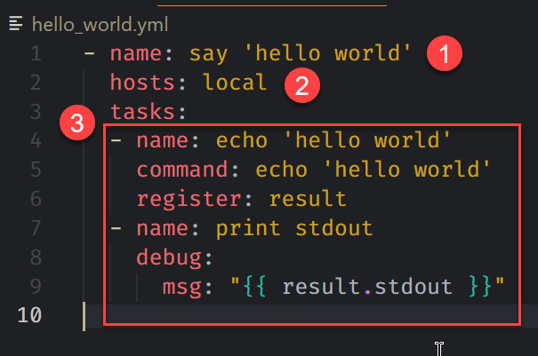

Ansible playbook 可以讓我們用劇本的方式來管理想對 managed node 執行的動作，Ansible playbook 是使用 YAML 的格式來編寫，當然 Ansible 也有提供對應的檢查工具來檢查 playbook 是否有正確編寫。
這一篇來學習如何寫 Ansible playbook
Playbook
建立一個空的 playbook 很簡單，只要建立一個 <xxxx>.yml 檔就算是完成一個 playbook 的建立。內容才是重點，主要會有幾個元素

-
劇本名稱
-
執行對象: 這會跟 Inventory 設定檔有關
- Inventory 可以在執行 playbook 時指定，這裡提供一個範本
1
2[local]
server1 ansible_ssh_host=127.0.0.1 ansible_ssh_port=32769 ansible_ssh_pass=docker- line 1:
[local]是 inventory group 名稱，也是 hosts 指定的目標，可以依自己的喜好編寫，後面也會有一篇研究如何寫 inventory 檔案
-
任務列表: 會包含一系列要執行的動作，通常會使用 Ansible 所提供的 module 來執行
command是 Ansible 內建的 module，可以對 hosts 下指令register也是 Ansible 內建的 module，可以將回傳訊息記錄在變數內，這邊就是會儲存在result這一個變數- 要將變數輸出到 console 上，需要使用
Jinja2的樣本功能，使用{{ }}的方式輸出
執行 playbook
在 WSL 的環境內，切換到 playbook 檔案所在得資料夾，執行這段指令，需依實際的狀況作些調整，基本指令結構是
1 | ansible-playbook -i <inventory 檔案> <playbook 檔案名> |
範例:
1 | ansible-playbook -i hosts hello_world.yml |
如果設定都正確的話，可預期會得到這樣的執行結果
小結
撰寫 Ansible playbook 本身不難，一旦知道我們想要自動化的行為有什麼，相關流程需要怎麼安排，接下來就是找對應的 Ansible module 或是網路上有的參考範例，最後就是整理在 playbook 劇本內。當然更進階的管理辦法或是 playbook 的檔案結構應該要怎麼規劃，就留給各位去研究了。
補充
Ansible 有提供 ansible-lint 的工具，可檢查 playbook 的格式是否正確，該工具的 GitHub Repo 由此去，Ansible Lint Documentation